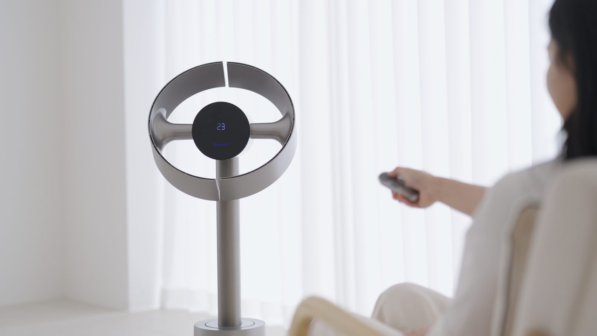

드리미 MF10
날개 없는 서큘레이터. 방 공기를 섞는 쪽이지, 얼굴에 꽂는 선풍기가 아니다.
한 줄 결론
에어컨과 같이 원룸·거실 순환이 목표면 후보. 마감·리모컨 자석·고단 소음이 하이엔드 가격을 깎는다.
채널 에피소드를 Discover. Design. Detail. 순으로 정리한 와이어 본문입니다. 자막 기반 초안.
Discover
하단 흡입 후 기압차로 증폭. 수평·수직·자이로 윙. 아이 안전·먼지 닦기 쉬운 날개리스.
Design
오브제로 서 있으나 이음새·플라스틱 느낌, 약한 리모컨 마그넷. 강한 순환 체감, 고단 소음.
Detail
순환은 확실, 값 대비 디테일은 미완. 저단·수면 모드로 타협 가능 여부를 먼저 본다.